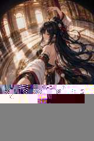
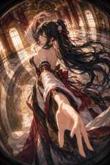
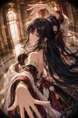

Visual collection / 2026
ASHIKAGAGILDED REVERIE
黄金の光と深紅の残響。極端な遠近感のなかで、一瞬の身振りを写真集のように切り取ったアシカガのビジュアル・ポートフォリオ。

Profile
THE SUBJECTアシカガ
静かな自信と、舞う瞬間の躍動を併せ持つ大人の女性。長く流れる黒髪、白い花飾り、深紅のリボン。黒・象牙・金を重ねた衣装が、宮殿の光を受けて表情を変える。
MOODElegant / Cinematic / Poised
PALETTEBlack / Ivory / Crimson / Gold
SETTINGSunlit gilded palace hall
LENSUltra-wide / Fisheye perspective
Selected frames
Gallery
近景の手、流れる髪、円形の床模様。距離感を大きく歪ませ、画面の奥行きそのものをポーズの一部として扱った4カット。


Concept
「宮殿の中心に立つ」のではなく、視線と動きで空間そのものを引き寄せる。
魚眼的な曲率と大胆な前景拡大を使いながら、表情はあくまで静かに。大きなジェスチャーと落ち着いた眼差しの対比を、アシカガのシリーズ全体を通した軸にしています。